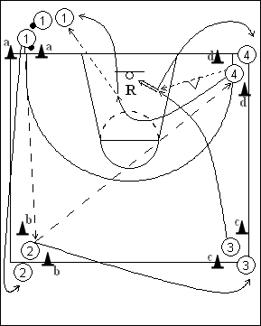

Catégorie : PASSES (Pas-009)
Déroulement
- Quatre files de joueurs aux quatre coins d’un demi-terrain. Les ballons sont dans la file 1.
- Le premier joueur de la file 1, derrière les cônes a, effectue une chest pass au premier joueur de la file 2 derrière les cônes b; celui-ci réalise une baseball pass vers le premier joueur de la file 4 derrière les cône d. Enfin, 4 fait une bounce pass pour le premier joueur de la file 3 (parti au niveau des cônes c) qui effectue le lay-up. Dès que cette dernière passe est faite, le deuxième joueur de la file 1 débute le drill à son tour.
- Chaque joueur avance dans la file suivante. Donc 1 va en 2, 2 et 3, 3 (après son lay-up) en 4. 4 effectue le rebond, fait une chest pass au dernier joueur de la file 1 et va derrière celui-ci.
Coaching points
- Ne jamais perdre de vue que le but de ce drill est de réaliser de bonnes passes; il importe que les joueurs partent bien de derrière les cônes, afin que les longueurs des passes soient maintenues.